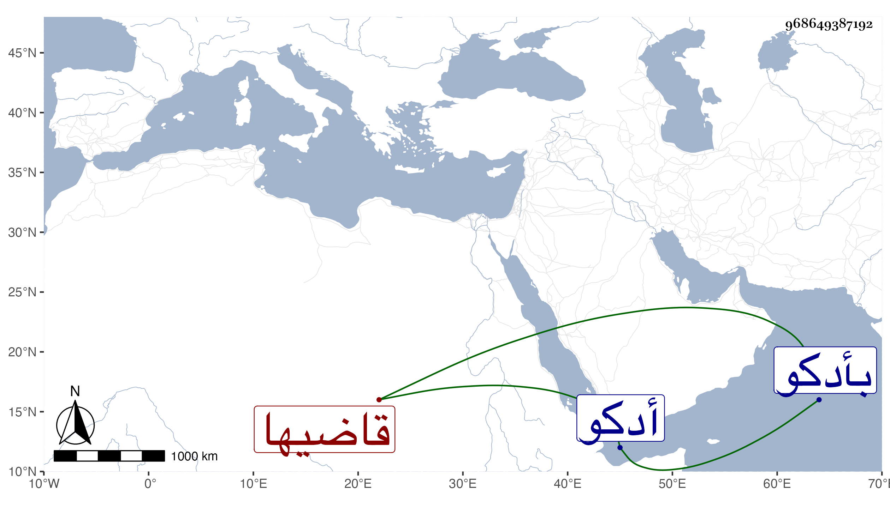

0902Sakhawi.DawLamic.ITO20230111-ara1.EIS1600.968649387192
Biography ID: 968649387192
1029
علي بن محمد بن عبد الرحمن نور الدين الإدكاوي قاضيها ويعرف بالغويطي بمعجمة ثم واو وآخره مهملة مصغر . ممن حفظ القرآن وتولع بالشهادة ثم ناب في بلده أدكو عن شعبان بن جنيبات ثم عن نور الدين البلبيسي ثم عن المحب أخي القاضي السيوطي ولم يحمد سيما وقد ضمن بحيرتها بمائتي ألف بعد أن كانت مباحة لخلق الله ودام سنين ثم راد عليه الشهاب بن محليس ثم أحمد بن عبد الله بن كنايف البرلسي واستمرت معه بثلاثة آلاف دينار فكان هذا من سيئاته وقد امتنع الزين زكريا من استنابته إلى أن عجز من دفع الرسائل مع تواليها وحينئذ أشركه مع عبد الرحمن بن إبراهيم بن أحمد وقيد عليه في عدم انفراده ومع هذا فالبلاء عليه مستمر وتعب شريكه معه ، ثم لم يزل على طريقته حتى مات في أوائل سنة سبع وتسعين بأدكو عفا الله عنه .
